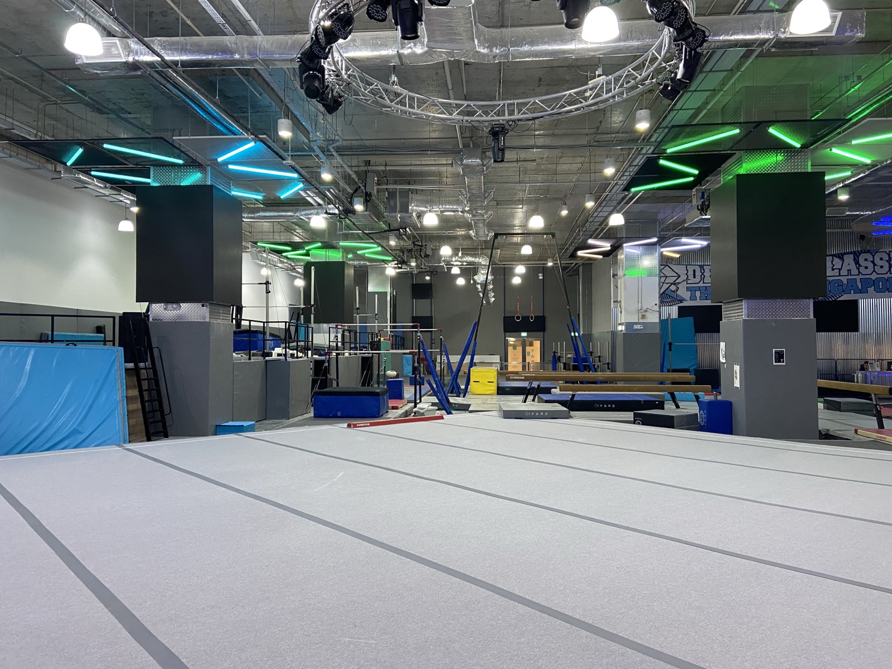
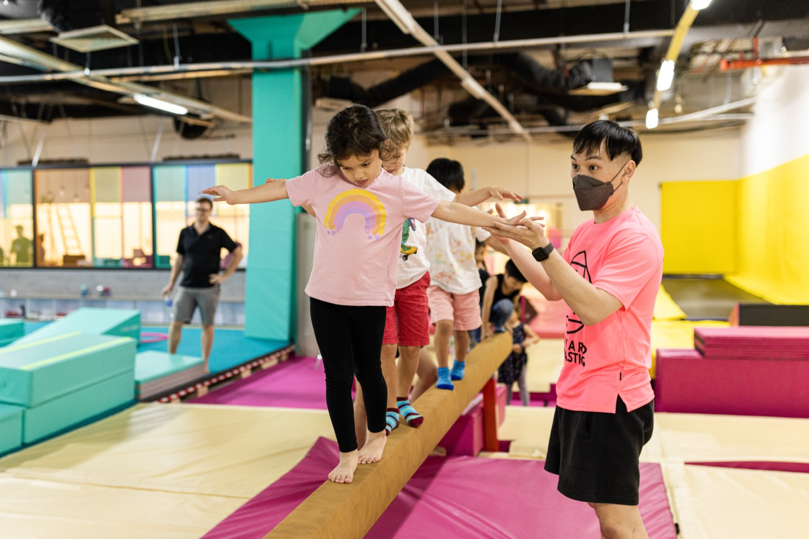
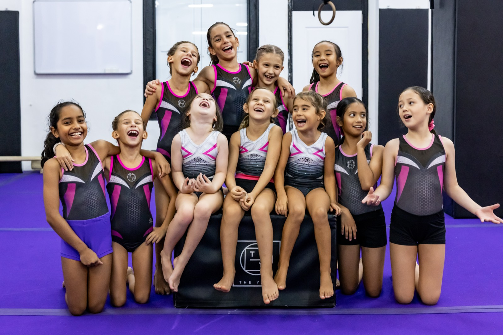
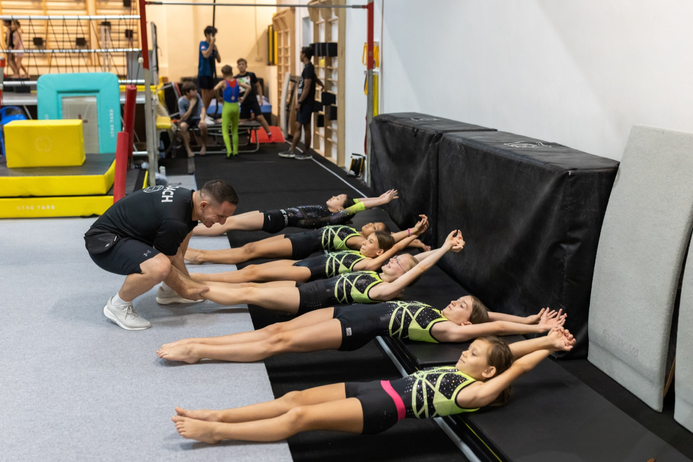

Jurong
- Phone+65 6816 8022
- WhatsApp+65 8749 3709
- Emailenquiries@theyard.com.sg
The Yard is one club with four homes across Singapore: Jurong, the High-Performance Arena at Perennial Business City; Bukit Timah, the Ninja Hub at KAP Mall; Dempsey, the Scenic Studio on Dempsey Hill; and Dover, the All-Rounder at SPGG and our original home. Every centre teaches recreational gymnastics from 18 months on FIG-certified apparatus with the same pathway, the same medals and the same coaching standards, and each has a character of its own, so the right choice is usually the one nearest home.
Jurong serves the west from Perennial Business City near Jurong East MRT. Bukit Timah and Dempsey cover the central belt, at KAP Mall and in the Dempsey Hill enclave. Dover covers the south-west from SPGG on Dover Road. All four are nut-free, with parent viewing areas, and a level earned at one is a level at all of them.

The High-Performance Arena: 17,500 square feet with Tumbling and Trampoline, an Adult Open Session and the club's competition meets.
Centre page →
The Ninja Hub: Warriors, Ninja Zone on a custom rig, Adult Foundation Gymnastics and a dedicated party room.
Centre page →
The Scenic Studio: Ninja Zone, boys' classes and free parking at a bright heritage building.
Centre page →
The All-Rounder and our original home: Warriors and Senior Warriors to 16, boys' classes and Freestyle camps.
Centre page →Confirmed from each centre's live class schedule. Recreational gymnastics runs everywhere, and the specialities differ from centre to centre, which is exactly the point of having four.
| Programme | Jurong | Bukit Timah | Dempsey | Dover |
|---|---|---|---|---|
| Gym Tots (18 months to 3) | Yes | Yes | Yes | Yes |
| KinderTots (3 to 4) | Yes | Yes | Yes | Yes |
| FUNdamentals (5 to 10) | Yes | Yes | Yes | Yes |
| Warriors (5 to 10) | Yes | Yes | ||
| Senior Warriors (10 to 16) | Yes | |||
| Boys Tots and Boys FUNdamentals | Yes | Yes | ||
| Ninja Zone (Ninja Tots and Ninja White) | Yes, custom rig | Yes | ||
| Tumbling and Trampoline (10 to 16) | Yes | |||
| Adult (16 and over) | Open Session | Adult Foundation | ||
| Competitive WAG and MAG | By selection | By selection | By selection | By selection |
| Freestyle | Holiday camps | |||
| Holiday camps | Gymnastics, HP WAG and MAG | Gymnastics, Ninja | Gymnastics, Ninja | Gymnastics, Freestyle |
| Birthday parties | Sat and Sun, 4 to 6pm | Sat and Sun, 3:30 to 5:30pm | Sat and Sun, 3:30 to 5:30pm | Sat and Sun, 4 to 6pm |
Each centre has its own team, and WhatsApp is usually the fastest way to reach them; they know the timetable, the coaches and most of the children by name. For a general enquiry, the contact page has the form and the main line.
Four: Jurong (Perennial Business City), Bukit Timah (KAP Mall), Dempsey (Dempsey Hill) and Dover (SPGG). Every centre runs recreational gymnastics from 18 months, and each has its own specialities.
Recreational gymnastics (Gym Tots, KinderTots, FUNdamentals) runs at all four centres. Warriors runs at Bukit Timah and Dover; Senior Warriors at Dover; boys' classes at Dempsey and Dover; Ninja Zone at Bukit Timah and Dempsey; Tumbling and Trampoline at Jurong; adult sessions at Jurong (Open Session) and Bukit Timah (Adult Foundation Gymnastics). Competitive WAG and MAG squads train at all four centres by assessment and invitation, and the club's meets are hosted at Jurong.
Whichever is nearest. Every Yard centre runs the same recreational entry pathway (Gym Tots, KinderTots, FUNdamentals) with the same coaching standards and FIG-certified apparatus, all four centres are equal within the club, and a child who moves house keeps their level. See the recreational pathway.
Dempsey has free parking around the clock at Dempsey Hill. Jurong (Perennial Business City), Bukit Timah (KAP Mall) and Dover (SPGG) sit within developments with their own paid parking, and SPGG members get two hours free at Dover.
Choose the centre nearest you and book a trial class, and the fee is shown at booking. If you are unsure which programme fits, WhatsApp any centre team and they will recommend one class, the one that fits, at the right centre.